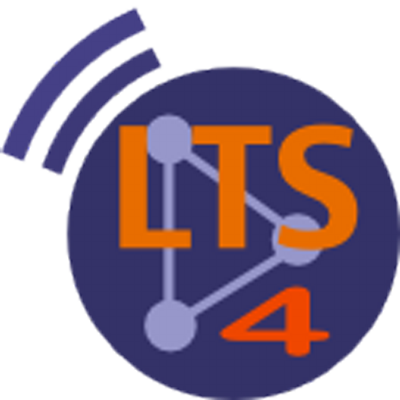

Hey there! I'm Sevda, a second year PhD student in Computer and Communication Sciences (EDIC) at EPFL. I'm supervised by Prof. Pascal Frossard and Dr. Dorina Thanou in the Signal Processing Laboratory 4 (LTS4  ). My research mainly focuses on self-supervised graph representation learning and its applications in biomedicine.
Previously, I worked as a semester project student under the guidance of Assoc. Prof. Haitham Hassanieh in the Laboratory of Sensing and Networking Systems (SENS). Here, my research centered on molecular communication with multiple transmitters.
Prior to joining EPFL, I earned my BSc Degree from the Department of Electrical and Electronics Engineering at Bilkent University in Ankara, Turkey. During my undergraduate studies, I was advised by Assoc. Prof. Cem Tekin at CYBORG, focusing on contextual and combinatorial multi-armed bandits in volatile settings.
In my free-time, I like to join EPIC events, play the piano, and practice French. I really enjoy exploring new places and trying different sports!